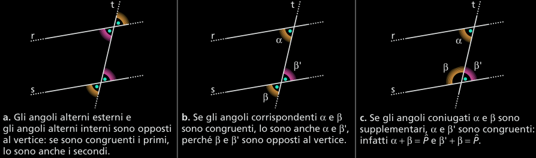
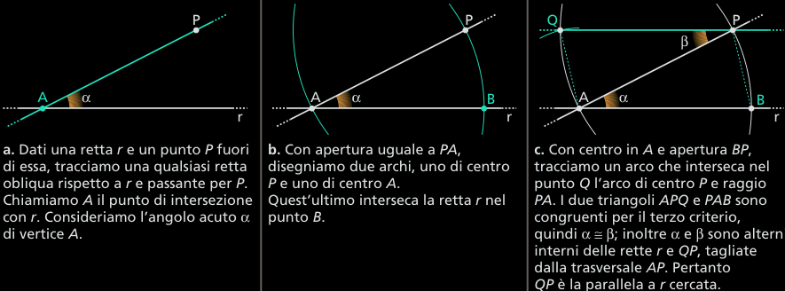
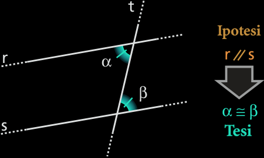
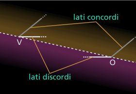

Criteri di parallelismo
Una retta che intersechi altre due rette date dice trasverale. Esiste una terminologia classica, di grande aiuto, per individuare gli angoli formati da due rette con una loro trasverale: in riferimento alla figura si ha.
Gli angoli alterni sono da parti opposte rispetto alla trasversale t ma entrambi interni o esterni e non adiacenti.
Gli angoli corrispondenti sono dalla stessa parte della trasversale t, uno interno e l'altro esterno e non adiacenti.
Gli angoli coniugati sono entrambi interni (o esterni) dalla stessa parte della trasversale t.

Definizione 3.2.1 (Rette parallele) Due rette sono parallele quando non hanno alcun punto in comune oppure quando coincidono.
Da questa definizione si deduce che la relazione di parallelismo fra rette è riflessiva: a // a.
Inoltre tale relazione è anche simmetrica: se a // b, allora b // a.
Consideriamo due rette parallele a e b (figura). La retta risulta contenuta interamente in uno dei due semipiani individuati da b; indichiamo tale semipiano con β.
A sua volta la retta b risulta contenuta interamente in uno dei due semipiani individuati da a; indichiamo quest’altro semipiano con α.
L’intersezione fra i due semipiani e viene chiamata striscia (figura b).
Una striscia è una figura convessa poiché un qualunque segmento avente gli estremi all’interno della striscia giace interamente in ognuno dei semipiani e quindi anche all’interno della striscia stessa.
Come possiamo capire se due rette sono parallele? La risposta è data dai prossimi teoremi.
Teorema 3.2.2 (Il teorema delle rette parallele). Se due rette tagliate da una trasversale formano una coppia di angoli alterni interni congruenti, allora sono parallele.
Ipotesi α ≅ β. Tesi r // s.

Dim. Ragioniamo per assurdo. Supponiamo che la tesi sia falsa, cioè che le rette r e s non siano parallele ma si incontrino in un punto C.
Osservando il triangolo ABC e applicando a esso il teorema dell’angolo esterno a un triangolo, concludiamo che β è maggiore di α. Siamo giunti a contraddire l’ipotesi che diceva α ≅ β; dobbiamo quindi ritenere falsa la supposizione iniziale.
Allora r e s non possono intersecarsi, esse pert nto risultano parallele. □
Più in generale, vale il seguente criterio per il parallelismo.
Teorema 3.2.3. Se due rette incontrandone una terza, formano:
angoli alterni (interni o esterni) congruenti;
angoli corrispondenti congruenti;
angoli coniugati (interni o esterni) supplementari.
allora le due rette sono parallele.
Per la dimostrazione basta notare che in ogni caso possiamo ricondurci a quello degli angoli alterni interni, v. figura seguente.
Corollario 2.3.4. Due rette perpendicolari a una stessa retta sono parallele. Infatti, nella figura a lato le due rette a e b formano con r angoli corrispondenti congruenti, in quanto retti, quindi le rette sono parallele.
La parallela per un punto a una retta
L’esistenza di una parallela a una retta data e passante per un punto fissato è dovuta al fatto che è sempre possibile costruire una coppia di angoli alterni interni congruenti. Infatti, disegnato un angolo α, si può sempre costruire un angolo β, congruente ad α, alterno interno di α.
L’unicità della parallela per un punto a una retta data non si può invece dedurre dalle proprietà finora esaminate e deve essere accettata come postulato.
Esso è storicamente noto come il quinto postulato di Euclide o postulato delle parallele.
L’inverso del teorema delle rette parallele
Vale anche il teorema inverso del teorema delle rette parallele.
Teorema 2.3.5. Se due rette sono parallele, formano con una qualunque trasversale due angoli alterni interni congruenti.
Dim. Ragioniamo per assurdo. Supponiamo che la tesi sia falsa, cioè che risulti α diverso da β, precisamente α > β.
Per il punto A possiamo allora tracciare la retta s' in modo che risulti α' ≅ β.
In tal modo s' e r risultano parallele.
Per il punto A esistono allora due parallele alla stessa retta r, contrariamente a quanto afferma il quinto postulato.
Poiché la negazione della tesi conduce a un risultato assurdo deduciamo che la tesi è vera, cioè che gli angoli alterni interni sono congruenti. □
Più in generale, tenendo conto delle osservazioni fatte in precedenza, vale il seguente teorema.
Teorema 2.3.6. Se due rette sono parallele, allora formano con una trasversale:
angoli alterni (interni o esterni) congruenti;
angoli corrispondenti congruenti;
angoli coniugati (interni o esterni) supplementari.
Il teorema delle rette parallele e il suo inverso formano insieme una condizione necessaria e sufficiente per il parallelismo di due rette.
Corollario 2.3.7. Date due rette parallele, se una retta è perpendicolare a una di esse, è perpendicolare anche all'altra.
Osservando la figura seguente è anche possibile dimostrare la seguente proprietà.
Corollario 2.3.8. Due rette perpendicolari a due rette incidenti sono anch’esse incidenti.
Osservazione. Le condizioni enunciate nei due teoremi precedenti sono necessarie per il parallelismo. Quando le rette sono parallele, valgono tutte queste proprietà, che potrai utilizzare in altre dimostrazioni.
Corollario 2.3.9. Due rette parallele a una terza retta sono parallele fra loro.
a // b, b // r ⇒ a // r
Dim. Ragioniamo per assurdo. Se a non fosse parallela a b, le due rette si incontrerebbero in un punto. Per quel punto passerebbero due rette (a e b) parallele a una retta data (r). Ciò è in contraddizione con il quinto postulato di Euclide, quindi la tesi non può essere negata: a e b sono parallele.
Dal corollario 2.3.9 si ricava che per le rette parallele vale la proprietà transitiva. Infatti, se è vero che a // b e b// c, le rette a e c sono entrambe parallele a b, quindi sono parallele fra loro, ossia a // c.
Corollario 2.3.10. Due rette a' e b', che siano rispettivamente parallele a due rette a e b incidenti, sono anch’esse incidenti (v. figura).
Corollario 2.3.11. Date due rette parallele, se una terza retta incontra una delle due allora incontra anche l’altra.
Rette parallele e direzione
Nell’insieme delle rette di un piano la relazione di parallelismo gode delle proprietà riflessiva, simmetrica e transitiva, quindi è una relazione di equivalenza. Suddividiamo allora l’insieme delle rette di un piano in classi di equivalenza. Ogni classe contiene tutte le rette parallele fra loro.
L’insieme di tutte le rette appartenenti a una classe viene anche detto fascio di rette parallele o fascio improprio di rette. Come rappresentante di una classe scegliamo una retta qualunque di quella classe. Essa ha in comune con tutte le altre rette della stessa classe una caratteristica, la direzione. L’insieme quoziente è quindi l’insieme di tutte le possibili direzioni delle rette di un piano.
Le proprietà degli angoli con i lati paralleli
Definizione 2.3.12 (Lati concordi, lati discordi) In due angoli con i lati paralleli, si dicono concordi i lati paralleli che giacciono dalla stessa parte rispetto alla retta che congiunge i vertici. In caso contrario i lati si dicono discordi. □
Teorema 2.3.13 (Angoli con i lati paralleli) Due angoli che hanno i lati paralleli possono essere congruenti o supplementari:
sono congruenti se entrambi i lati paralleli sono concordi (oppure discordi);
sono supplementari se due lati paralleli sono concordi e gli altri due discordi.